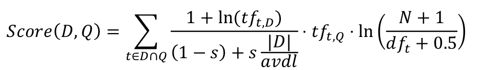
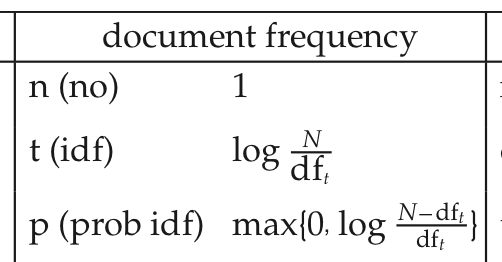
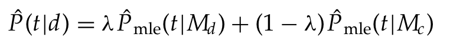

Основы информационного поиска (Весна 2016)
На данной странице приведены основные материалы, которые помогут успешно подготовиться к практическим заданиям и экзамену.
Преподаватели
Никита Жильцов - лекции
Владислав Бойко - практика
Слайды
- Лекция 1: Основы информационного поиска, структура инвертированного индекса [Слайды]
- Лекция 2: Алгоритмы индексирования, сжатие индекса [Слайды]
- Лекция 3: Ранжирование в векторной модели документа [Слайды]
- Лекция 4: Вероятностные модели поиска и языковое моделирование [Слайды]
- Лекция 5: Оценивание результатов поиска [Слайды]
- Лекция 6: Машинное обучение ранжированию [Слайды]
- Лекция 7: Ранжирование структурированных документов [Слайды]
- Практика 1: Знакомство с Elastic Search [Слайды]
- Практика 2: Поисковые команды [Слайды]
Программа экзамена
- Основные компоненты инвертированного индекса
- Алгоритмы пересечения словопозиций: основной, общий, с пропусками
- Координатный индекс: структура, алгоритм пересечения словопозиций
- Блочное индексирование, основанное на сортировке
- Однопроходное индексирование в оперативной памяти
- Распределенное индексирование с MapReduce
- Законы Хипса и Ципфа
- Способы хранения словаря без сжатия: массив, строка, блок
- Сжатие словаря фронтальным кодированием
- Сжатие словопозиций кодированием переменной длины
- Сжатие словопозиций: гамма коды
- Векторная модель документа: взвешивание по TF-IDF
- Ранжирование в векторной модели документа (формула косинуса, базовый алгоритм)
- Опорная нормировка по длине документа
- Бинарная модель независимости: вывод функции ранжирования
- Бинарная модель независимости: оценки по методу максимального правдоподобия
- Бинарная модель независимости: оценивание через обратную связь по релевантности
- BM25: смесь пуассоновских распределений, формула ранжирования
- Языковые модели: определение, пример, применение для поиска
- Языковые модели: оценка по методу максимального правдоподобия, сглаживание Елинека-Мерсера, сглаживание Дирихле
- Меры оценивания качества без ранжирования. Кривая точность-полнота
- Средняя точность по 11 точкам. Макроусредненная средняя точность (mean average precision, MAP)
- Нормированная дисконтированная совокупная выгода (normalized discounted cumulative gain, NDCG)
- Постановка задачи машинного обучения ранжированию. Три подхода: поточечный, попарный, списочный
- Метод опорных векторов: линейная разделимость классов, опорные векторы, линейный классификатор
- Метод опорных векторов: геометрический зазор, задача оптимизации
- Метод опорных векторов: классификация с мягким зазором
- Метод опорных векторов для ранжирования (Ranking SVM)
- BM25F: некорректная и корректная комбинация весов полей
- MLM: смесь вероятностных языковых моделей
- PRMS (Probabilistic retrieval model for semi-structured data)
Тестовые коллекции
Практические задания
- Необходимо составить списки стоп-слов на основе статистики терминов в коллекции по трем разным коллекциям документов. Стоп-словами будут считаться 5% самых частотных и 5% наименее частотных (по документной частоте, document frequency=df) терминов из индекса. Предобработка коллекции должна включать основные операции, такие как перевод в нижний регистр и стемминг.
- Для данной коллекции построить графики распределений, иллюстрирующие законы Ципфа и Хипса. Графики должны содержать кривые, построенные по коллекции, и прямые, параметризуемые этими законами и построенными с помощью метода наименьших квадратов.
- Реализовать сжатие словаря фронтальным кодированием. В реализуемой структуре данных для каждого термина должны храниться значения документной частоты, указатели на списки словопозиций, указатели терминов. Необходимо реализовать поиск термина (term lookup): по данному термину найти его документную частоту. Апробировать на тестовой коллекции.
- Реализовать сжатие файла словопозиций кодированием переменной длины (variable byte encoding). Апробировать на тестовой коллекции.
- Реализовать вариант функции ранжирования tf-idf - модель с опорной нормировкой (pivoted document length normalization). , где D - документ, Q - запрос, tf(t,D) - частота термина t в документе D, |D| - длина документа D, avdl - средняя длина документа, tf(t,Q) - частота термина t в запросе, N - количество документов в коллекции, df(t) - документная частота термина t, s - параметр в диапазоне [0,1]. Апробировать на тестовой коллекции.
- Реализовать варианты функции ранжирования tf-idf с разным масштабированием документной частоты. См. рис.

Апробировать на тестовой коллекции.
- Реализовать языковую модель, основанную на линейной интерполяции (сглаживание Елинека-Мерсера), при которой вероятность сгенерировать термин t из документа d оценивается как смесь (линейная комбинация) распределений вероятностей термина по документу и по коллекции. См. формулу.

Апробировать на тестовой коллекции.
- Реализовать подсчет основных мер оценивания: точность на уровне k (P@k), макроусредненная средняя точность на уровне k (MAP@k), mean reciprocal rank (MRR). Протестировать результаты с помощью коллекции CACM (см. п. "Тестовые коллекции") и оценок релевантности (relevance judgments), генерируя поисковую выдачу случайным образом смешивая релевантные и неоцененные результаты (эмуляция некоторой функции ранжирования). Сравнить полученные оценки с результатами инструмента оценивания от TREC: trec_eval.
- Провести оптимизацию параметра регуляризации (C) линейной модели обучения ранжированию SVM-rank (linear kernel) в схеме пятиблочного скользящего контроля (5-fold cross validation). В качестве тестовой коллекции можно взять DBpedia (см. п. "Тестовые коллекции") с оценками релевантности. В качестве целевой меры - усредненную среднюю точность (MAP@k). Привести оценки качества поиска для разных параметров с макроусреднением по 5 блокам. Меры оценивания можно считать с помощью инструмента trec_eval. Признаки - на свое усмотрение (примеры: косинусная мера, длина документа в лексемах, длина запроса, значение BM25 и т.п.)
Оценка
| Части курса |
Баллы |
Дата сдачи |
| Практические задания |
30% |
2 апреля |
| Проект |
20% |
6 апреля (группы 201, 202, 203) и
9 апреля (группы 204,205,207) |
| Экзамен |
50% |
c 12 апреля |
Студенты, получившие не менее 45 баллов за практические задания и проект, получают экзамен (50 баллов) автоматом.
Рекомендованная литература
- К. Маннинг, П. Рагхаван, Х.Шютце. Введение в информационный поиск. Пер. с англ. - М.: ООО "И.Д. Вильямс", 2011. - 528 с. (Основной учебник).
- Tie-Yan Liu. Learning to Rank for Information Retrieval. Springer, 2011.
- S. Amit, C. Buckley, M. Mitra. Pivoted document length normalization // In Proc. SIGIR, pp. 21–29. ACM Press. (1996) URL: http://dspace.library.cornell.edu/bitstream/1813/7217/1/95-1560.pdf.
- J. Zobel, A. Moffat. Exploring the similarity space // ACM SIGIR Forum. Vol. 32. No. 1. ACM, 1998. URL: http://citeseerx.ist.psu.edu/viewdoc/download?doi=10.1.1.18.6193&rep=rep1&type=pdf
- S. Robertson, S. Walker. Some simple effective approximations to the 2-poisson model for probabilistic weighted retrieval // Proceedings of the 17th annual international ACM SIGIR conference on Research and development in information retrieval. Springer-Verlag. New York, Inc., 1994. URL: http://nclt.computing.dcu.ie/~gjones/Teaching/CA437/p232.pdf
- M. Smucker, J. Allan, and B. Carterette. A Comparison of Statistical Significance Tests for Information Retrieval Evaluation // In Proceedings of the 16th ACM CIKM, pages 623–632, 2007. URL: http://citeseerx.ist.psu.edu/viewdoc/download?doi=10.1.1.366.7734&rep=rep1&type=pdf
Идеи для проектов
Приложения
- Вертикальный поиск по сайту нашего университета: подразделение (см. список), сотрудники (пример страницы), конкурсы/программы/гранты (см. страницу). Система должна автоматически определять тип запрашиваемой страницы в запросе по ключевым словам. Пример эвристики - если в запросе упоминается имя, возвращать релевантные страницы о сотруднике (а не произвольные страницы, на которых упоминается данное имя).
- Отслеживание товара (задается ключевыми словами, например, "телевизор большая диагональ") в агрегаторе Яндекс.Маркет. Индекс периодически обновляется. Учесть свежесть результатов при ранжировании.
- Поиск по пабликам КФУ и ИТИСа ВКонтакте: по упоминаниям людей в сообщениях, авторам сообщений и тексту сообщения (например, "петя иванов студвесна"). Можно использовать API ВКонтакте. Выделять термины в запросе, обозначающие имя, и придать им больший вес в ранжирующей функции.
- Поиск твитов (см. Twitter API). Придумать новую ранжирующую функцию, которая бы учитывала: появление ключевого слова как обычного слова, упоминания пользователя и в виде хэштэга; нормализацию по длине. Кроме того, обратить внимание на предобработку - разбиение на лексемы.
- Поиск упоминаний компаний в новостях. Можно взять RSS ленту с пресс-релизами о компаниях, например, Firrma. На стадии индексирования компании можно выделять из некоторого готового словаря (возможно, с алиасами - эквивалентными наименованиями, например, "Российские технологии"="Ростех"). В поисковом интерфейсе вводятся ключевые слова, обозначающие компанию, и, возможно, уточняющие термины (например, "ростех выручка"). Система возвращает релевантные новости. Учесть различное взвешивание терминов в запросе.
Темы исследований
- Провести сравнительную экспериментальную оценку различных ранжирующих функций на основе разных вариантов взвешивания TF-IDF для некоторых тестовых коллекций (как минимум две). Взять в качестве основы (baseline) - классическую схему взвешивания TF-IDF. Привести значения основных мер оценивания (MAP@100, P@10, P@20, MRR, NDCG@100) и процент относительного улучшения по сравнению с основой. Посчитать статистическую значимость по тесту Фишера. Сделать выводы.
- Провести аналогичное исследование (см. 1). Сравнить только BM25 и query likelihood language model (Dirichlet smoothing). Оптимизировать параметры модели BM25 в схеме пятиблочного скользящего контроля. Сделать выводы.
- Придумать статические и динамические характеристики документов (см. Лекция 3). Исследовать их значимость (в смысле качества поисковых результатов) по схеме leave-one-out для модели обучения ранжированию SVM-rank. Привести результаты, как минимум, на двух тестовых коллекциях. Сделать выводы.